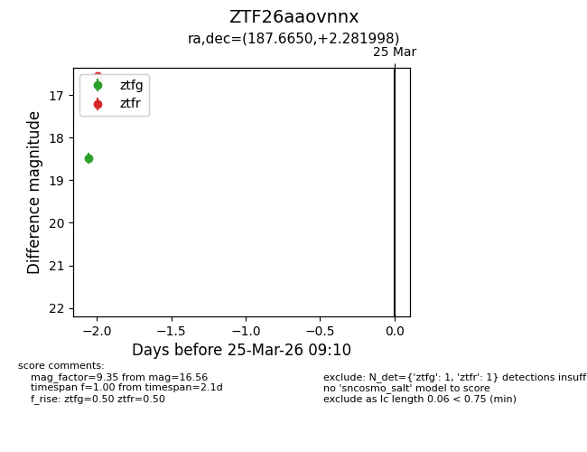
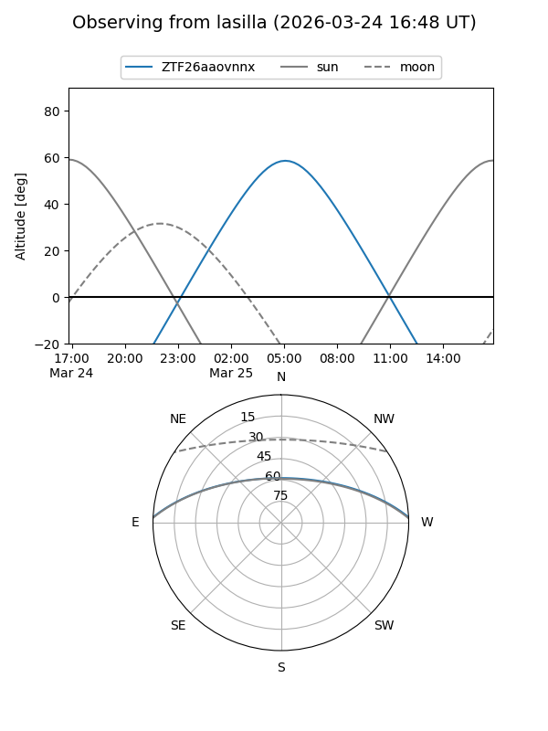
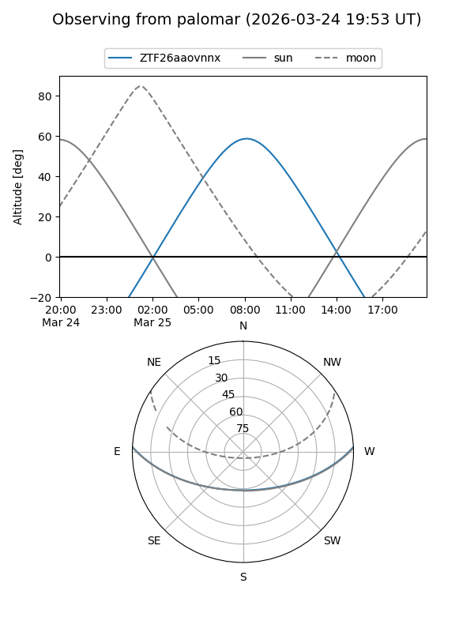

ZTF26aaovnnx
Target ZTF26aaovnnx at 2026-03-25 09:12
Aliases and brokers:
FINK: link
Lasair: link
ALeRCE: link
alt names
ZTF26aaovnnx (ztf,fink_ztf)
Coordinates:
equatorial (ra, dec) = 187.6650,+2.28200
equatorial (HMS+DMS) = 12:30:39.60,+02:16:55.19
galactic (l, b) = (290.7290,+64.66033)
Flags:
Photometry:
last ztfg=18.48, ztfr=16.56
1 ztfg, 1 ztfr detections
Lightcurve

Visibility


Additional plots